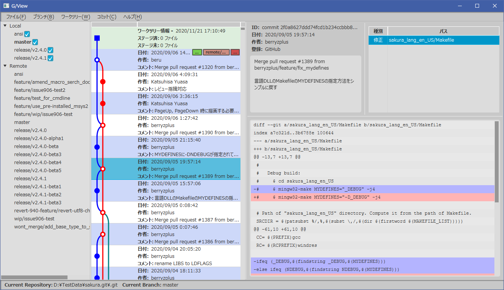

The screenshot above is a prototype of the git client "gview" that I am working on for this blog post.
It's still in the early stages of development, and far from practical,
but I've done a lot of research and testing in the process of developing the program.
In order to write them down, I have created this blog.
I hope this will be helpful for those who are trying or researching something similar.
In gview, the goal is to have a structure roughly like the following.